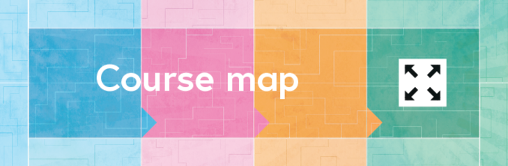

6 Comments
This course is designed by the University of Leeds to help school and college students transition to university or the workplace. We also welcome other learners; you will have seen from the welcome area that we have a diverse cohort signed up.
Click the image to access the course map, or download it from the Downloads section below.
It’s anticipated that this week’s tasks will take around two hours to complete, including watching videos, joining discussions, reading articles, and completing exercises.
In the first week, we look at recruitment posters and their messages for both soldiers and civilians. Research World War 1 art and reflect on a painting representing notions of heroism during the war.
Explore contemporary German film and prepare a review of a recent book, film, or TV program about the First World War. Ideas are available in the Downloads section.
Have Your Say
Use the comments to share your reasons for joining this course. If you find someone with similar interests, consider ‘following’ them to filter discussions.